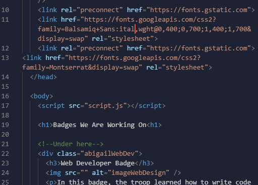
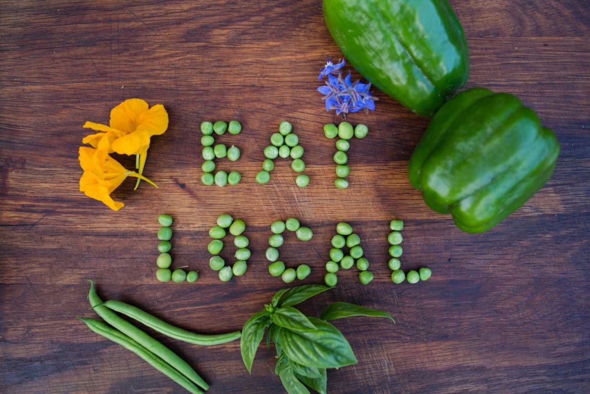
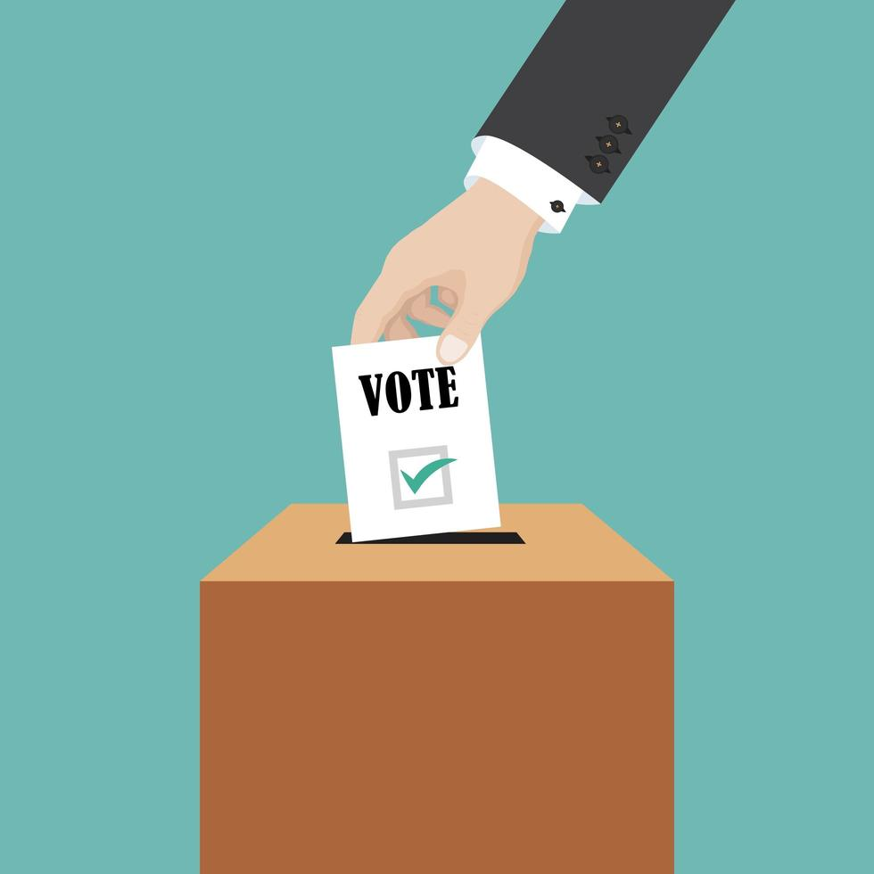

Badges We Are Working On
Web Developer Badge
In this badge, the troop learned how to write code in HTML and CSS to create websites. Then, using what we learned, we created the website you are viewing right now! The troop learned HTML (Hypertext Markup Language) and CSS (Cascading Style Sheets). Along with making our own webiste, the trooop learned how content and sharing of a website can help it suceed.

Collage Artist Badge
Rebecca led the Collage Artist badge this year. In the badge, girls learned how collages can be used to tell a story or emotion. At the end, all members of Troop 94881 came together to make two collages each. One collage was a study of color, and the other was a freestyle piece. Girls were encouraged to share their work with others. Needless to say, they all did a fantastic job!

Lorayne's Badge
Lorayne plans to run the locavore badge (a locavore being someone who eats locally). The first part of this badge will feature an overview of when local produce is in season and an interview of a chef about eating and buying foods locally. After this the troop will make snacks utilizing locally grown apples, the first being apple sandwiches and the second being apple and brie skewers. Next the troop will make PB&J's using locally produced jam, peanut butter and bread! The capstone meal of the Locavore badge will be a three course dinner with a salad for the appeitizer, chicken with mushroom and lemon for the entree and lastly a lemon cake for dessert. Any produce and poultry will be bought from local farms.

Behind The Ballot
Behind the ballot was run by Sienna this year. This badge was to teach the ins and outs of voting and how to properly prepare when we reach the voting age. We all worked together on a slideshow to learn about local elections, state elections, and presidential elections. At the end we discussed campaign advertisments and had an opportunity to make our own individually!

Jordan's Badge
"Science of Happiness" badge was a badge about the chemicals that are known to cause the emotion known as "happiness", and how different things affect mood. One of the things talked about in this badge was how different musical chords bring on different emotions (demonstrated on bass).